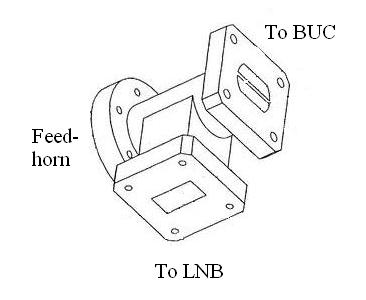

Solution hyperfréquence bande C
L'Orthomode WR159 Camelia est un composant hyperfréquence conçu pour exploiter deux polarisations orthogonales en bande C. Il dispose de deux entrées WR159 indépendantes et d'une sortie destinée à l'alimentation directe d'une antenne horn.
Sa conception permet une séparation efficace des signaux, de faibles pertes d'insertion et une excellente adaptation pour les applications radar, télécommunications et antennes professionnelles.

| Paramètre | Valeur |
|---|---|
| Bande de fréquence | WR159 (4,90 GHz – 7,05 GHz) |
| Entrées | 2 × WR159 |
| Sortie | Interface antenne horn |
| Type | Orthomode Transducer (OMT) |
| S11 | < -15 dB |
| Perte d'insertion | 0,1 dB typique |
| Polarisations | Orthogonales (Horizontale / Verticale) |
| Technologie | Guide d'onde WR159 |
| Applications | Antennes horn, télécommunications, radar |